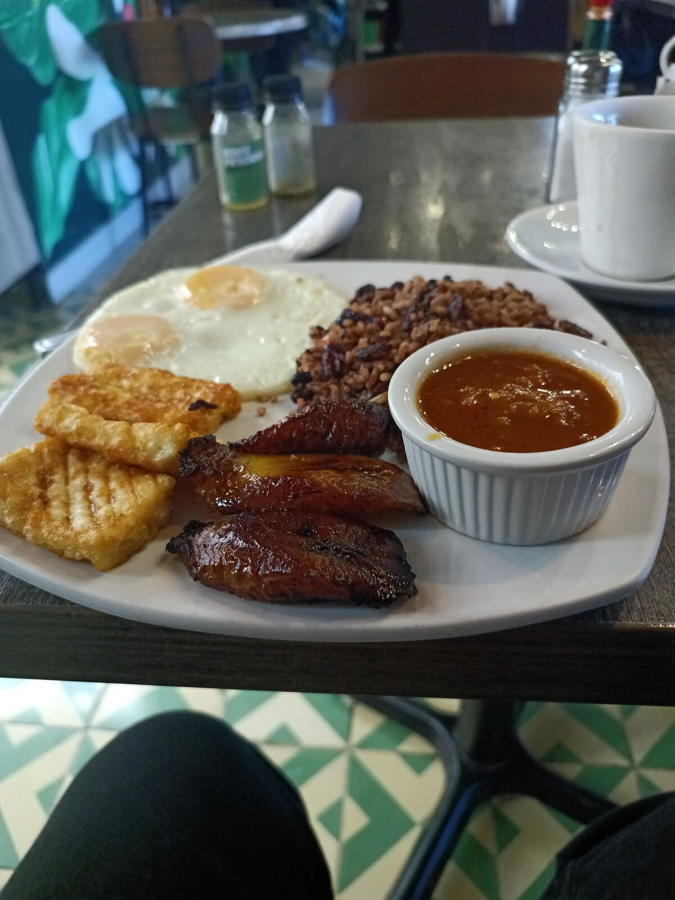
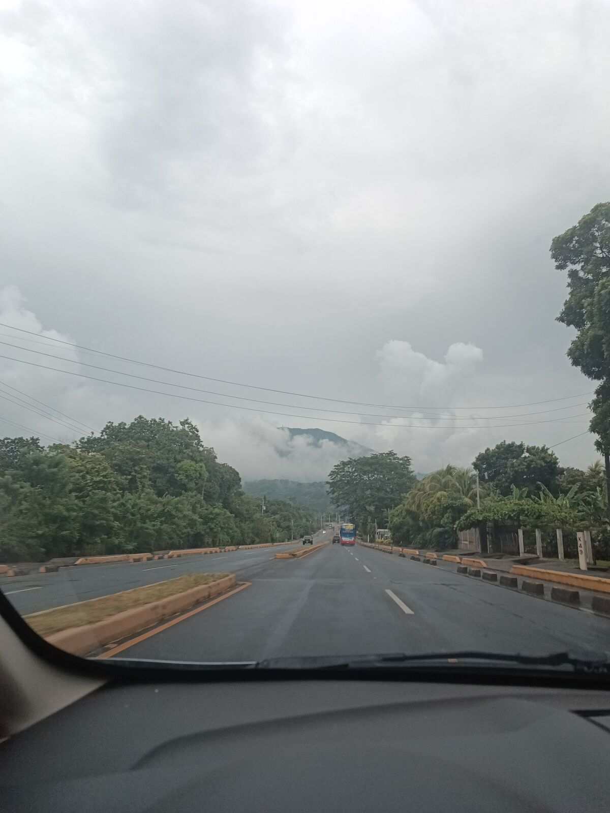
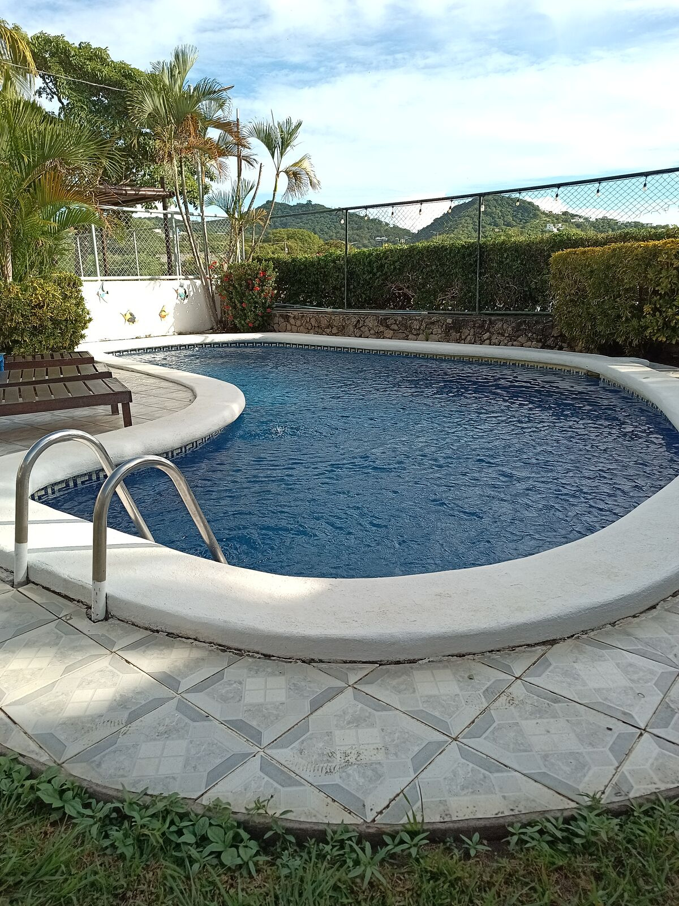
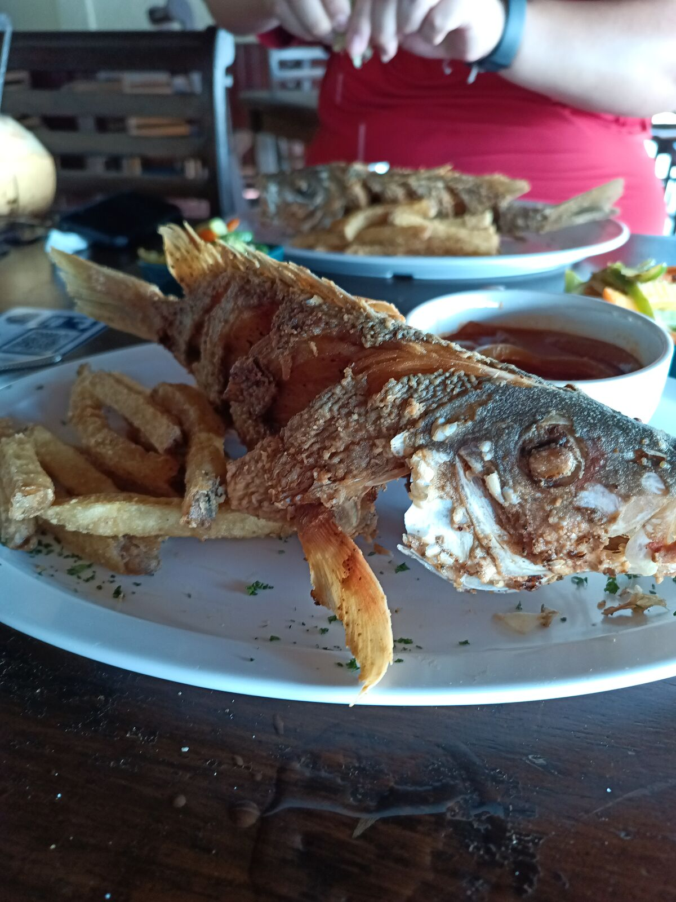
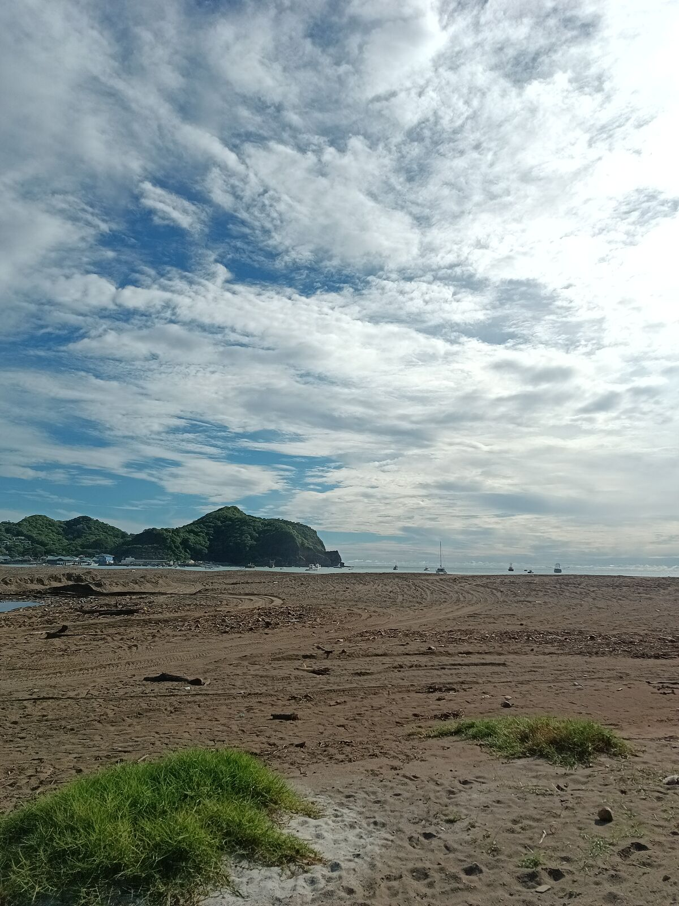
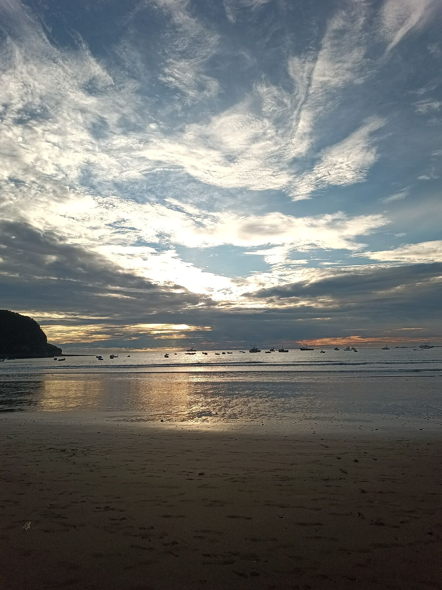
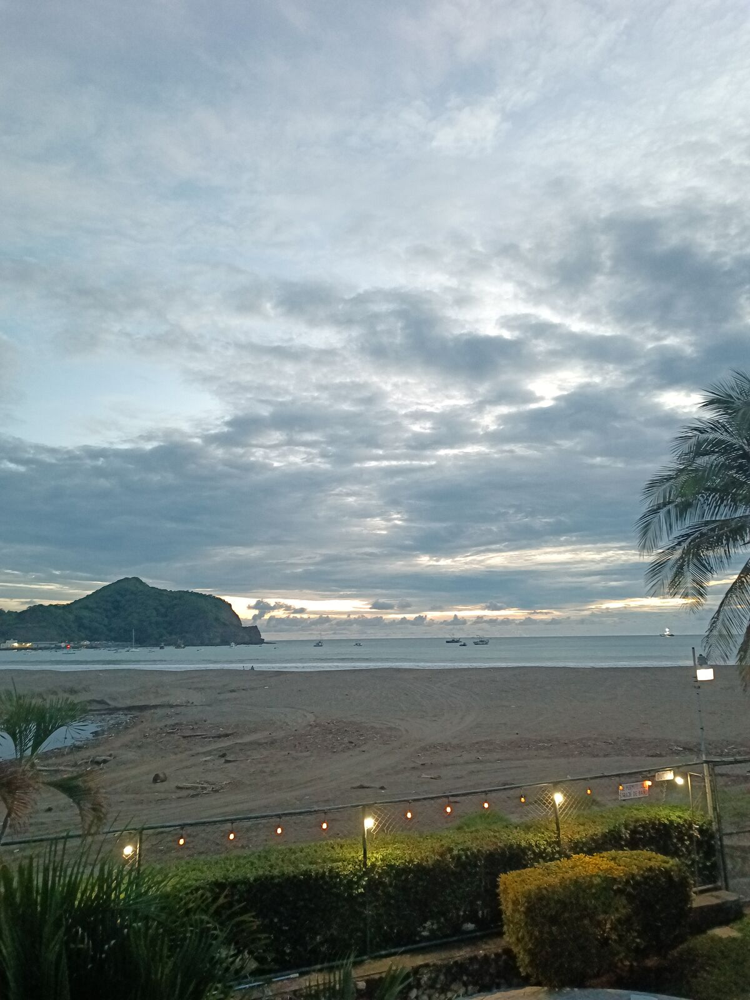

尼加拉瓜的天堂
像今天这样没什么安排的日子，我会试着整理一些想法。我还在摸索自己的写作风格，所以如果不够连贯，请多包涵。我发现自己也需要时间和空间，把想法放进“冥想盆”里，就像《哈利·波特》里的邓布利多那样：分析、拆解，然后当然要动笔写下来。有些日子排得很满，比如周日我们就没休息；甚至今天，我们从马那瓜出发去圣胡安德尔苏尔，一路祈祷别再被警察拦下，哈哈哈。压力是真的，哈哈哈。
周三我们一早起来，去和一位潜在合作伙伴开会，谈的是一些和这趟旅行毫不相干的项目。在互联网和视频通话的时代，我现在才真正体会到当面见的价值和不同：视频通话很容易变得例行公事、没什么灵魂。所以以后我会尽量多面对面开会。

我们聊了金融科技和投资。如果你需要一套核心银行系统，我和 José 就有一套：别忘了在 Instagram 上联系我，或者联系 José。这次会面很有趣，也很有收获；有些人经验非常丰富，学习别的领域总是很美好。我之前说过：技术人员、工程师、天才的毛病，就是以为自己什么都懂、什么都能解决，最重要的是以为一切都该按他们的想法来解决，却不肯弄脏双手：不去现场问、不去看、不用科学方法，也不提出解决方案。希望不久的将来我们能在尼加拉瓜做生意。
我刚刚花了 30 分钟设置 VS Code，好让它正确识别我的文件。我用一种叫 Markdown 的格式写作，我超爱这个格式，哈哈哈，可编辑器就是认不出来，结果发现是文件名末尾多了一个空格。好吧，继续。
我们回酒店休息，本来说要睡一觉，哈哈，结果没睡成：我忙自己的事、看了几个项目，然后出发去圣胡安德尔苏尔。关于公路我可能要啰嗦一下，但它们的标识之完善真的让我吃惊。当然不是每条路都一样好，但主干道确实如此，我很希望在危地马拉也能看到这样的路，比如 Roosevelt 大道、通往萨尔瓦多的公路，或者泛美公路。
感谢老天下了雨，路上的人少了很多。我们一直按法律规定开 50 公里时速。路过一段美丽的路段，尼加拉瓜的平原上满是牛群，好多好多牛；路上看到几个小湖，一切都很宁静，最棒的是，多亏了下雨，一点都不热。公路维护得特别好，很宽，最重要的是有可以安全骑车的空间。有些 100 米长的自行车道，看着挺好笑，但我对 José 说：“首都以外，我们哪条公路上都没有这 100 米，哈哈。所以哪怕只差 100 米，他们也赢了我们。”

我们经过 José 的家乡省份里瓦斯（Rivas），本以为是另一座大城市，其实更像一个小镇：漂亮、小巧、发展得不错，有购物中心，是一座正在转型的城市。我们继续沿着一条两旁绿树成荫的漂亮直路开往圣胡安德尔苏尔，到处都能骑车。强烈推荐。
终于到了圣胡安德尔苏尔，迎接我们的是一个环岛。我以为 Xela 的环岛够多了，但冠军要颁给尼加拉瓜，环岛之国。倒不是说不好，哈哈哈哈；只是环岛多得让我惊讶，说实话我很喜欢。
我们住在一家很漂亮的酒店 HC Liri，百分之百推荐。二楼的露台不仅能看到泳池，还能看到大海；旁边就是山，我都不敢相信那是咸水。山和海的这种反差总让我惊叹：危地马拉的海滩通常离山很远，我们的海岸比较平，所以看到这些山特别有意思。

午饭吃了一条和我家小猫一样大的鱼，一边吃一边看海。能靠近大海又不那么热，真好，因为附近有暴风雨，我们开心得很。

吃完午饭走回酒店的路上，我们才发现自己穿着运动裤、T 恤、运动鞋和袜子，哈哈哈哈。人都在海滩了，我们却完全没意识到：计划只是去吃午饭，根本没想过这回事，直到我说：“哎，这里可以下海啊”，哈哈哈。然后我看了看自己，又看了看 José，说：“嗯……算了”，哈哈哈哈。那天我们没下海。
这里的海滩是泥土和沙子的奇怪组合，还有很多、太多石头，看起来像河里的石头，哈哈哈。看到石头之后又是贝壳，而且又是多得不得了，多到必须穿鞋，不然走上去很疼。不过一切总是很干净。

那天吃得太多，晚饭就没吃。我们在泳池里泡了好几个小时，然后就去睡了。
这是美好的一天。海滩保持得这么干净、一切这么井然有序，连街头小贩都不像别处那样纠缠，真让人惊叹。我很希望危地马拉也能有这样的地方，而且我觉得是可能的，只要国家和地方政府，还有我们每个人，都对自己的海滩多用一点心。


我带着一种奇怪的感觉睡着了。
👆 点击地图上的任意一个点，即可阅读当天的章节。